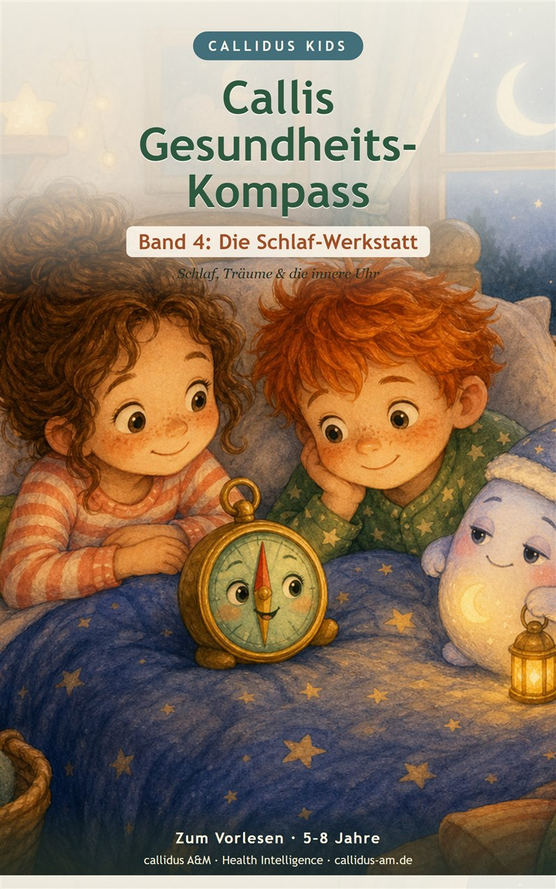
Für alle Kinder, die abends noch schnell etwas ganz Wichtiges tun müssen — und dabei fast im Stehen einschlafen.
Mit Calli, Mira, Noah — und Nino, dem Nachtfreund.
Schlafen ist nicht langweilig. Und es ist auch keine verlorene Zeit.
Während du schläfst, arbeitet dein Körper auf Hochtouren: Er repariert, er wächst, er sortiert den Tag.
Und dein Kopf zeigt dir das verrückteste Kino der Welt — kostenlos, jede Nacht, Hauptrolle: du.
In diesem Buch lernst du, was nachts passiert, warum ein Ritual beim Einschlafen hilft und was du tun kannst, wenn der Schlaf mal nicht kommen will. Ganz ohne Druck.
Schlaf gelingt nicht durch Druck, sondern durch Sicherheit und Wiederholung. Dieses Buch erklärt Kindern in Bildern, warum Schlaf wertvoll ist, und nimmt die Angst vor dem Bett: vor der Dunkelheit, vor Träumen, vor dem Alleinsein.
Es lädt zu ruhigen Abendritualen ein und ermutigt Kinder, über Sorgen zu sprechen. Ein gutes Ritual ist wie ein Geländer — es hält, ohne zu schieben.
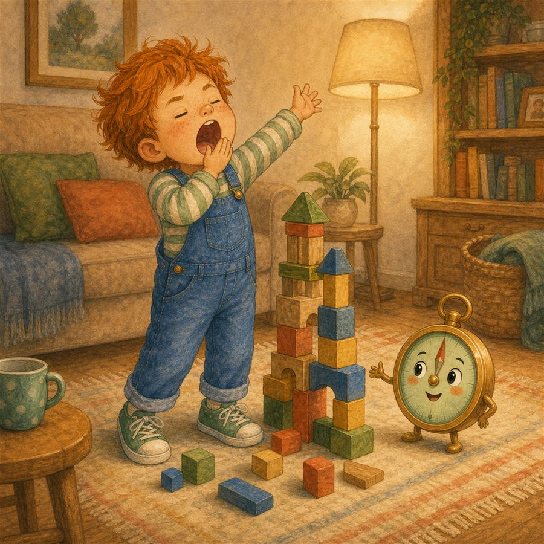
Am Abend hatte Noah ein sehr großes Problem. Es hieß: Bettzeit.
„Bettzeit ist unfair", sagte er und gähnte dabei so groß, dass ein kleiner Bus hindurchgepasst hätte. „Sie kommt immer dann, wenn ich noch etwas ganz Wichtiges tun muss."
„Zum Beispiel?", fragte Calli.
Noah zeigte auf seinen halbfertigen Bauklotz-Turm. „Der braucht noch einen Balkon. Und einen Fahrstuhl."
„Beeindruckend", sagte Calli. „Aber dein Körper hat auch noch etwas vor. Nachts."
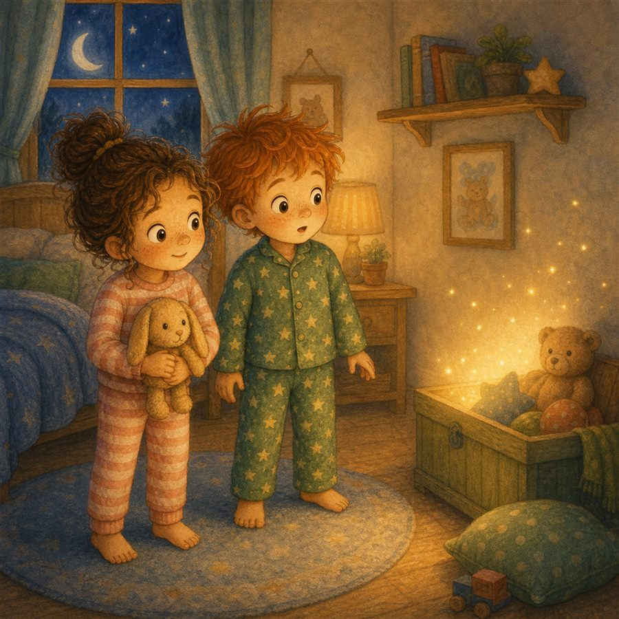
„Was hat mein Körper denn vor?", fragte Noah misstrauisch.
„Die Nachtschicht", sagte Calli. „Während du schläfst, wird in dir gearbeitet, aufgeräumt und gebaut."
Das Zimmer wurde langsam dunkler. Nicht gruselig-dunkel. Gemütlich-dunkel.
Und in der Ecke, wo eben noch die Spielkiste stand, begann etwas ganz leise zu leuchten.
„Oh", flüsterte Mira. „Was ist das?"
Callis Schlau-Seite
Während du schläfst, repariert sich dein Körper und wächst.
Dein Gehirn sortiert nachts, was du am Tag erlebt und gelernt hast.
Kinder brauchen viel Schlaf — meist mehr, als sie denken.
Wer gut schläft, ist am nächsten Tag wacher, fröhlicher und kann sich besser konzentrieren.
Callis Satz für dieses Kapitel
Schlaf ist kein Pauseknopf — Schlaf ist Nachtarbeit mit Kuscheldecke.
Mitmach-Kompass
Beobachte dich am Abend einmal ganz genau.
Wann kommt das erste große Gähnen?
Werden deine Augen schwer?
Wird deine Stimme leiser?
Das sind Müde-Signale — dein Körper sagt: Die Werkstatt möchte bald öffnen.
„Ich habe schon dreimal gegähnt", sagte Noah. „Der Detektiv hat gute Arbeit geleistet", sagte Calli.
Müdigkeitszeichen (Gähnen, Augenreiben, Quengeligkeit) sind ein guter Anker für die Bettzeit.
Wird das Zeitfenster verpasst, drehen viele Kinder noch einmal auf. Ein ruhiger, ähnlicher Ablauf am Abend hilft mehr als Ermahnungen. Schlafmenge und Rhythmus sind wichtiger als der perfekte einzelne Abend.
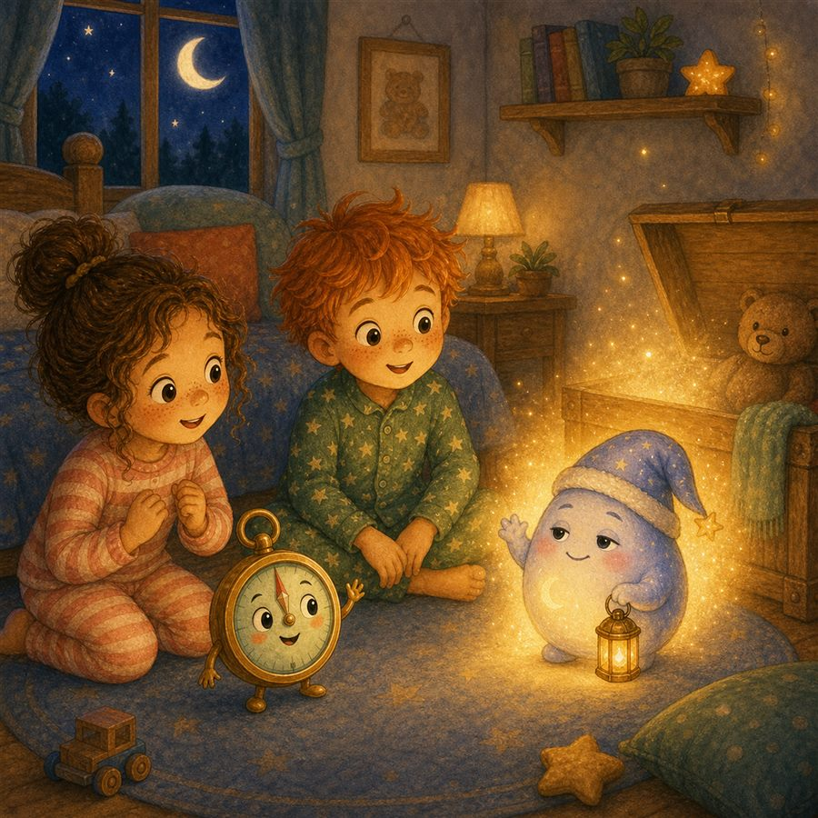
Aus dem leisen Leuchten wurde ein kleines, rundes Wesen mit Zipfelmütze und einer winzigen Laterne. Es gähnte freundlich. „Guten Abend. Ich bin Nino. Ich arbeite hier — in der Nacht-Werkstatt."
„Du arbeitest, während wir schlafen?", fragte Mira.
„Genau dann", sagte Nino und lächelte müde. „Am Tag habt ihr das Sagen. In der Nacht bin ich dran."
Calli nickte. „Nino ist der Nachtfreund. Er zeigt euch, was passiert, wenn ihr die Augen zumacht."
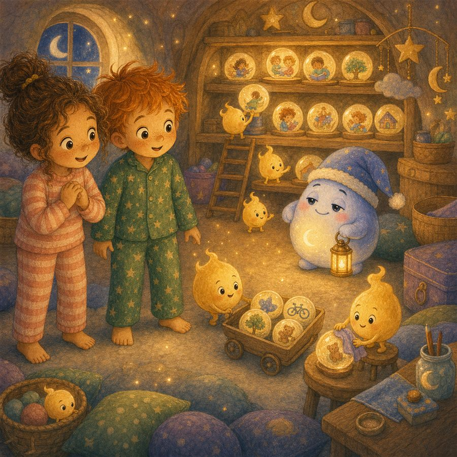
Nino hob die Laterne, und plötzlich war die Nacht-Werkstatt voller Leben. Kleine Lichtpunkte sortierten Erinnerungen in Regale. Einer schob einen Wagen mit dem Schild „Morgen wieder probieren". Ein anderer polierte eine Erinnerung, bis sie glänzte.
„Im Schlaf räumt dein Gehirn auf", flüsterte Nino. „Es sortiert, was du erlebt hast."
„Räumt es auch mein Zimmer auf?", fragte Noah hoffnungsvoll.
„Leider nein", sagte Nino. „Dafür bräuchte dein Gehirn Arme."
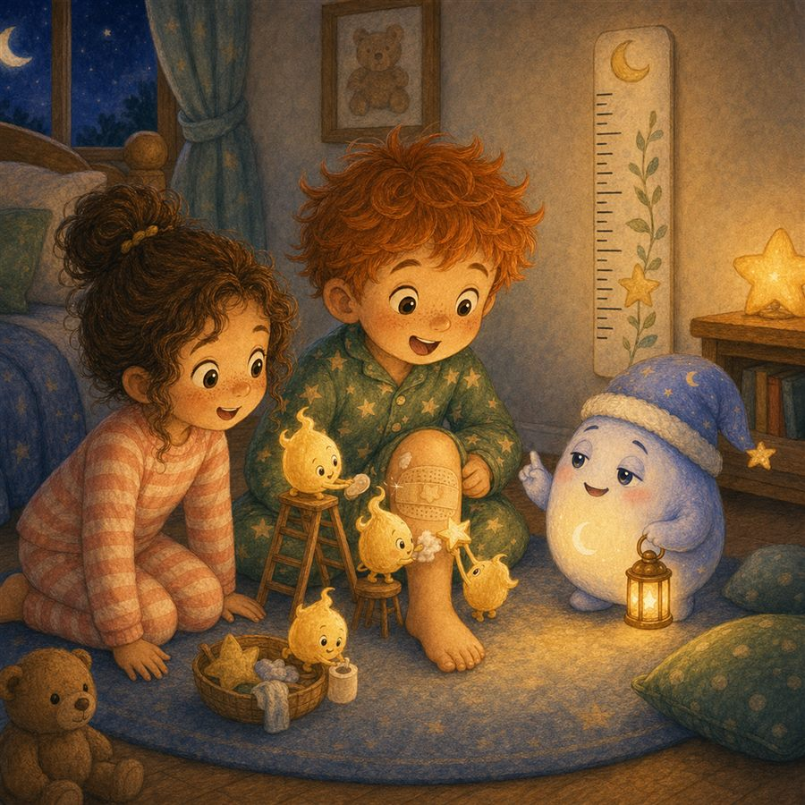
„Und was noch?", fragte Mira.
Nino zeigte auf ein kleines aufgeschürftes Knie, an dem winzige Helfer arbeiteten. „Der Reparatur-Trupp. Kleine Kratzer heilen nachts am besten." Dann zeigte er auf eine Messlatte an der Wand. „Und wusstet ihr das? Kinder wachsen vor allem im Schlaf."
Noah riss die Augen auf. „Ich werde nachts größer?"
„Ein winziges Stück", sagte Nino. „Nimm das, Wachbleiben."
Callis Schlau-Seite
Dein Gehirn sortiert Erlebnisse und Gelerntes in „Regale" — deshalb kann man morgens oft mehr.
Kleine Verletzungen heilen im Schlaf besonders gut.
Kinder wachsen vor allem nachts.
Deine Gefühle bekommen im Schlaf Platz, und morgen fühlt sich manches weniger zerknittert an.
Callis Satz für dieses Kapitel
Du verschläfst keine Zeit — du wartest deinen Körper.
Mitmach-Kompass
Vor dem Einschlafen nennt jeder drei Dinge vom Tag.
Etwas Schönes.
Etwas Lustiges.
Etwas, das morgen noch einmal probiert werden darf.
So bekommt dein Gehirn schöne Sachen zum Einsortieren.
„Der Apfel war knusprig", sagte Mira. „Mein Turm hatte fast einen Balkon", sagte Noah.
Kinder schlafen leichter, wenn der Abend ruhig ausklingt. Ein kurzer Rückblick auf schöne Momente des Tages (statt auf Streit oder Ermahnungen) beruhigt und schafft Verbindung.
Aufregende Spiele, Bildschirme oder Diskussionen kurz vor dem Schlaf machen dagegen wach. Ruhe ist das beste Einschlafsignal.
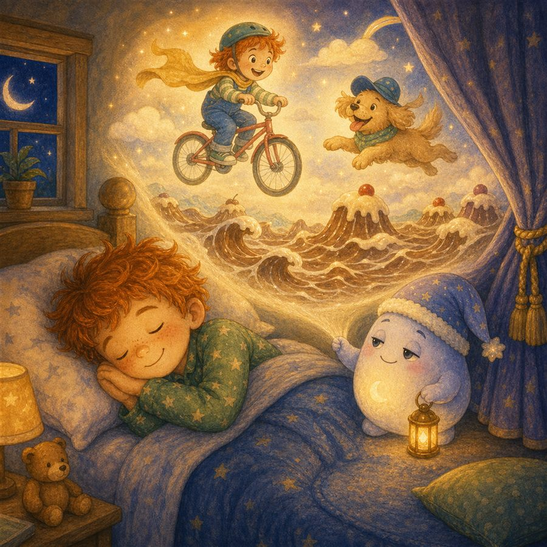
„Und jetzt", sagte Nino und zog einen samtweichen Vorhang beiseite, „kommt mein Lieblingsteil: das Traum-Kino."
Über Noahs Kopf begann ein sanftes Licht zu flackern, und mitten in der Luft erschienen Bilder: ein fliegendes Fahrrad, ein Hund mit Hut, ein Meer aus Pudding.
„Jede Nacht zeigt dein Kopf dir Filme", sagte Nino. „Kostenlos. Und die Hauptrolle spielst immer du."
Noah strahlte. „Ich will einen Film mit einem Drachen, der Pfannkuchen backt."
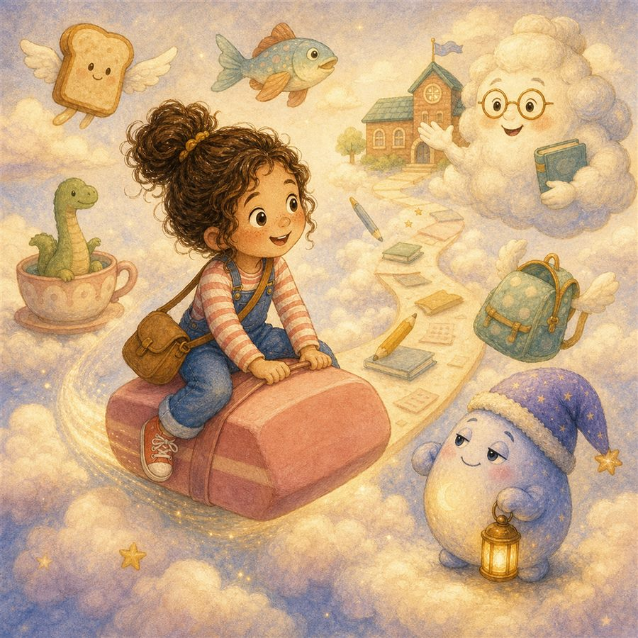
Manchmal, sagte Nino, sind Träume ganz schön durcheinander.
Im Traum-Kino ritt Mira plötzlich auf einem riesigen Radiergummi zur Schule, und ihre Lehrerin war eine freundliche Wolke.
„Warum sind Träume so komisch?", lachte Mira.
„Weil dein Kopf nachts spielt", sagte Nino. „Er mischt alles neu zusammen, was er tagsüber gesammelt hat. Komische Träume sind völlig normal — und oft ziemlich lustig."
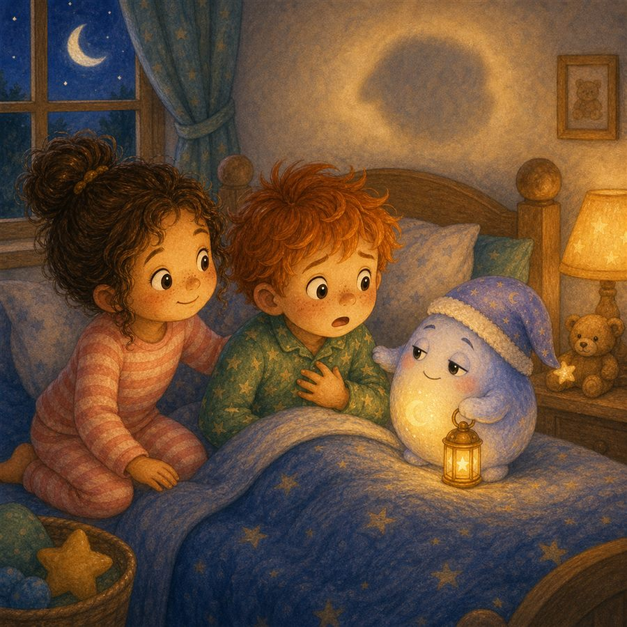
Doch manchmal wird ein Traum auch ein bisschen gruselig. Einmal schreckte Noah hoch. „Da war ein großer Schatten!"
Nino setzte sich ganz nah zu ihm und machte die Laterne etwas heller. „Das war ein Angst-Traum. Die gibt es auch. Aber weißt du das Wichtigste? Ein Traum kann nicht aus dem Bett steigen. Er bleibt im Kino."
Noah atmete langsamer. „Und wenn er wiederkommt?"
„Dann darfst du mich rufen — oder Mama", sagte Nino. „Über Träume reden macht sie kleiner."
Callis Schlau-Seite
Jeder Mensch träumt — auch wenn man sich morgens oft nicht erinnert.
Träume können schön, komisch oder manchmal auch gruselig sein. Alles davon ist normal.
Ein Traum kann dir nichts tun — er bleibt im Kopf, im „Traum-Kino".
Über einen Angst-Traum zu reden, macht ihn kleiner.
Callis Satz für dieses Kapitel
Träume dürfen alles sein — sie bleiben immer im Kino.
Mitmach-Kompass
Erzähl morgens von deinem Traum, wenn du dich erinnerst.
War er schön, komisch oder aufregend?
Male ihn auf, wenn du magst.
Bei einem Angst-Traum: erzähl ihn jemandem, den du magst.
Du wirst sehen — ausgesprochen wird er kleiner.
„In meinem Traum war ein Drache, der Pfannkuchen konnte", sagte Noah. „Guter Film", sagte Calli.
Albträume sind im Kindesalter häufig und meist harmlos. Hilfreich ist Nähe, ein ruhiger Ton und die klare Botschaft: „Das war ein Traum, du bist sicher." Über Ängste sprechen zu dürfen, nimmt ihnen die Macht.
Halten Abendinhalte (Geschichten, Videos) ruhig und altersgerecht. Bei häufigen, stark belastenden Albträumen lohnt sich fachlicher Rat.
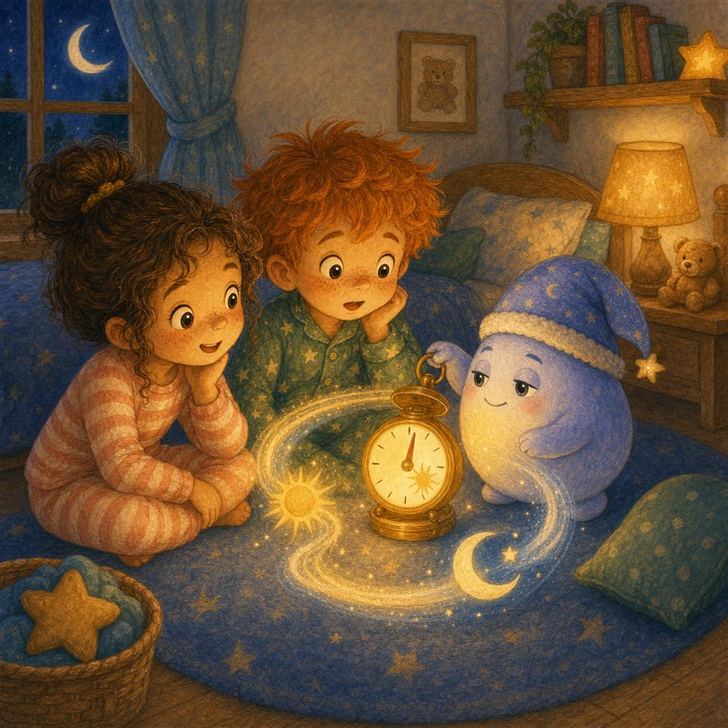
„Woher weiß mein Körper überhaupt, wann Nacht ist?", fragte Mira.
Nino zeigte auf eine kleine, sanft tickende Uhr in seiner Laterne. „Du hast eine innere Uhr. Sie sorgt dafür, dass du abends müde und morgens wach wirst."
„Und wie stellt sie sich?", fragte Noah.
„Vor allem durch Licht", sagte Nino. „Helles Licht sagt: Tag. Dunkelheit sagt: Zeit zum Schlafen. Deine innere Uhr hört sehr genau aufs Licht."
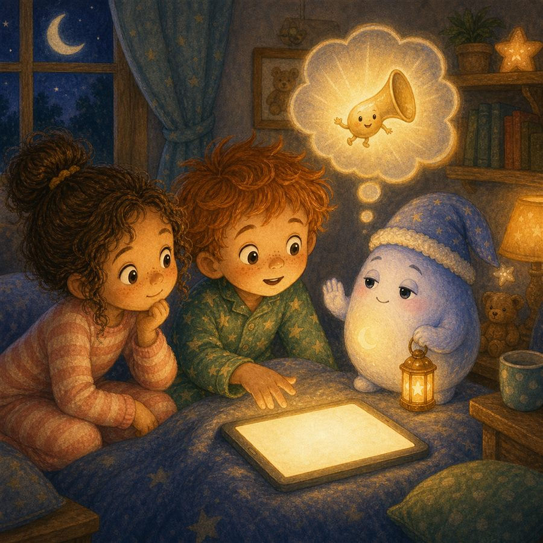
Noah wollte noch schnell aufs Tablet schauen. „Nur ganz kurz. Ein Krümel-Kurz."
Nino hob sanft die Hand. „Vorsicht. Helles Licht — vor allem vom Bildschirm — sagt deiner inneren Uhr: Es ist noch Tag! Dann findet dein Kopf den Aus-Knopf nicht."
Mira stellte sich vor, wie in ihrem Kopf jemand mit einer hellen Trompete durch die Nacht-Werkstatt marschierte. „Tröööt", sagte sie.
Noah legte das Tablet langsam weg. „Meine Werkstatt mag keine Trompeten."
Callis Schlau-Seite
Deine innere Uhr macht dich abends müde und morgens wach — und hört dabei genau aufs Licht.
Helles Licht und Bildschirme kurz vor dem Schlaf können wach machen.
Dunkelheit und Ruhe helfen beim Einschlafen.
Wer jeden Tag ungefähr zur gleichen Zeit ins Bett geht, dessen innere Uhr läuft besonders rund.
Callis Satz für dieses Kapitel
Licht sagt Wach — Dunkelheit sagt Gute Nacht.
Mitmach-Kompass
Such dir eine Zeit am Abend aus, ab der die Bildschirme schlafen gehen.
Leg Tablet und Handy an einen festen „Schlafplatz".
Mach danach das Licht ein bisschen dunkler.
Und jetzt merkst du vielleicht: Deine Augen werden von allein schwerer.
„Meine Bildschirme schlafen jetzt im Flur", sagte Noah. „Sehr ordentlich", sagte Nino.
Helles Licht und Bildschirme am späten Abend können das Einschlafen erschweren. Hilfreich sind ein fester Bildschirm-Schluss vor der Bettzeit, gedämpftes Licht am Abend und geräteruhige Schlafzimmer.
Regelmäßige Schlaf- und Aufwachzeiten stabilisieren die innere Uhr — auch am Wochenende möglichst ähnlich.
„Wie kommt man denn gut ins Bett?", fragte Mira.
„Mit einer Startrampe", sagte Nino und legte drei Karten auf die Decke. Karte eins: Zähne putzen. Karte zwei: Licht dunkler. Karte drei: Geschichte hören.
„Wenn die Reihenfolge jeden Abend ähnlich ist, merkt dein Körper: Ah, jetzt geht es Richtung Schlaf. Die Startrampe bringt dich sanft nach oben — bis der Schlaf dich übernimmt."
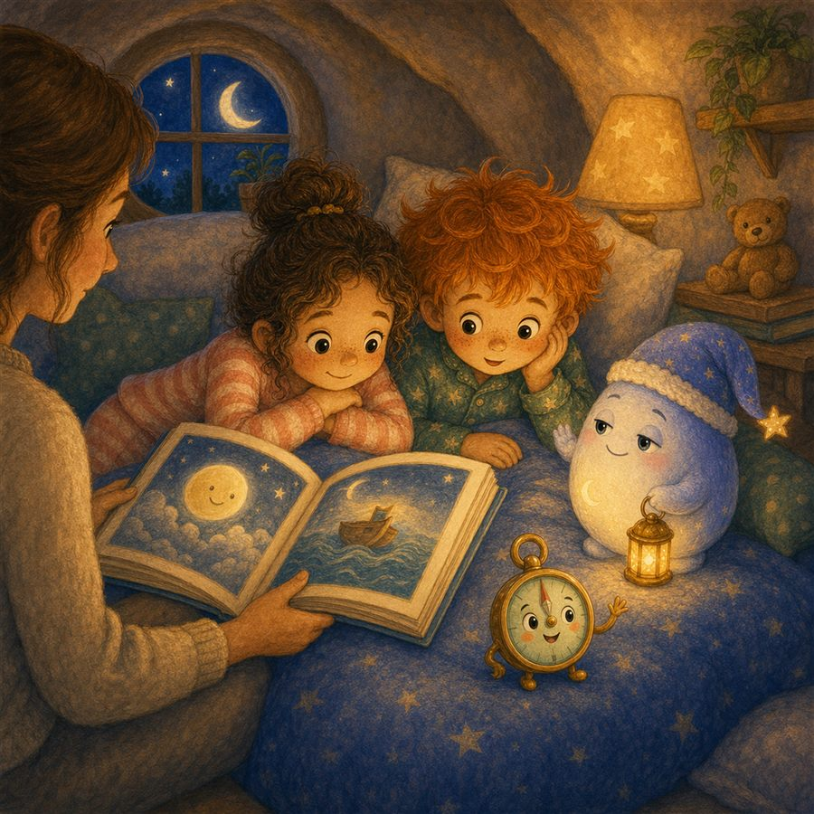
Mira kuschelte sich ins Kissen, während Noah eine Geschichte vorgelesen bekam. Die Stimme wurde leiser, die Sätze langsamer, und das Zimmer wurde warm und weich wie eine Höhle.
„Eine Geschichte ist ein guter Schlaf-Anfang", flüsterte Nino. „Sie nimmt deine Gedanken an die Hand und führt sie langsam zur Werkstatt-Tür."
Noah blinzelte schwer. „Erzähl weiter…", murmelte er. Doch da war er schon fast weg.
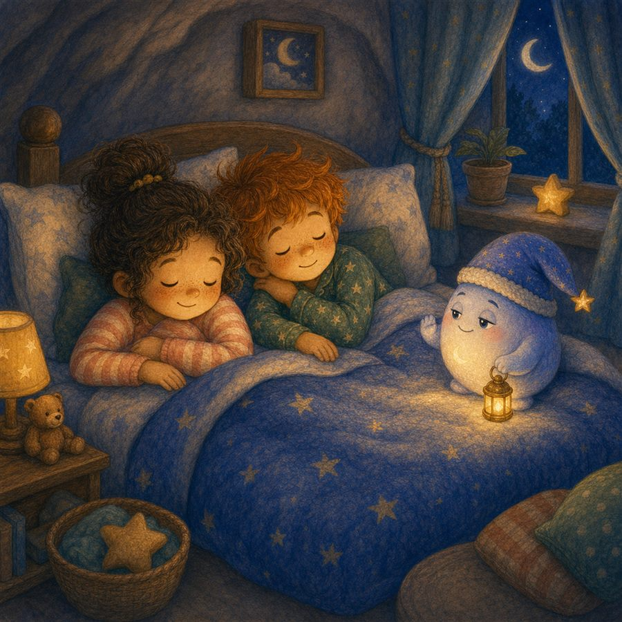
„Warum ist mein Zimmer zum Schlafen am besten?", murmelte Noah schon halb im Traum.
„Weil dein Körper eine gemütliche Höhle mag", sagte Nino leise. „Kühl, dunkel und ruhig — so schläft es sich am schönsten."
Er zog die Decke etwas höher, machte die Laterne ganz klein und setzte sich an den Bettrand.
„Gute Nacht, ihr zwei", flüsterte er. „Die Werkstatt hat jetzt geöffnet."
Callis Schlau-Seite
Immer eine ähnliche Reihenfolge (z. B. Zähne, Licht dunkler, Geschichte) sagt deinem Körper: Jetzt kommt Schlaf.
Ein kühles, dunkles, ruhiges Zimmer ist am besten zum Schlafen.
Vorlesen oder ein ruhiges Lied sind ein guter Schlaf-Anfang.
Wenn du nicht müde bist, darfst du trotzdem ruhen — Ruhen ist die kleine Schwester vom Schlaf.
Callis Satz für dieses Kapitel
Ein gutes Ritual ist eine Startrampe in den Schlaf.
Mitmach-Kompass
Male oder schreibe deine Abend-Reihenfolge auf.
Zum Beispiel: Abendessen, Zähne, Geschichte, Kuscheln, Licht aus.
Häng den Plan neben dein Bett.
Probiere ihn eine Woche lang aus.
Beobachte wie ein Forscher: Schläfst du schneller ein? Bist du morgens fitter?
„Meine Startrampe hat fünf Stufen", sagte Mira. „Dann kann nichts mehr schiefgehen", sagte Nino.
Wiederkehrende, ruhige Abendrituale sind einer der stärksten Einschlafhelfer. Hilfreich sind eine feste Reihenfolge, gedämpftes Licht, ein kühles, dunkles, ruhiges Zimmer und ausreichend Zeit.
Vorlesen verbindet und beruhigt. Ein Ritual soll tragen, nicht unter Druck setzen — kleine Abweichungen sind okay.
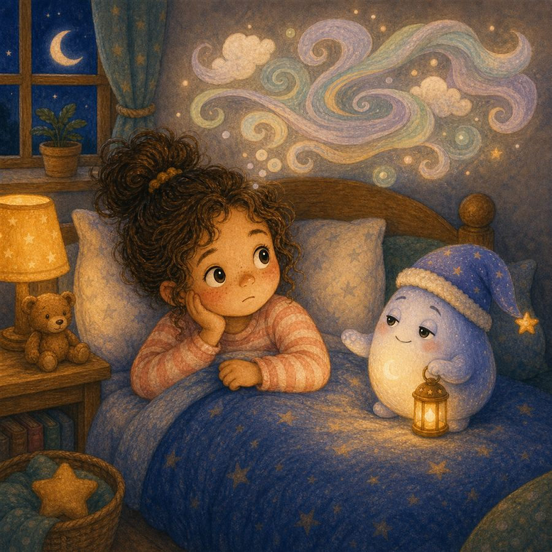
Nicht jede Nacht kommt der Schlaf sofort. Einmal lag Mira wach. „Mein Kopf ist noch ganz laut", flüsterte sie. „Da drehen sich lauter Gedanken."
Nino nickte verständnisvoll. „Das kennt jeder. Manchmal ist die Werkstatt-Tür noch nicht ganz zu."
„Und was mache ich dann?"
„Du musst nicht allein damit liegen", sagte Nino. „Das ist das Allerwichtigste."
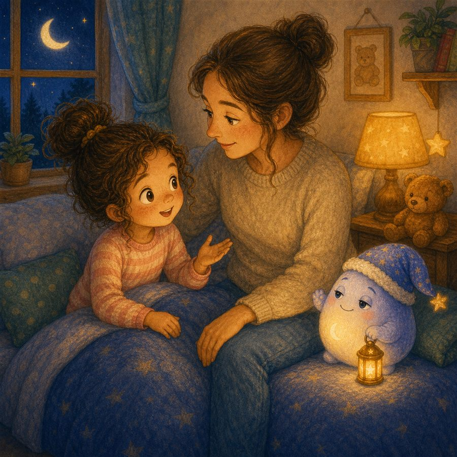
Mira ging zu ihren Eltern. „Ich kann nicht schlafen. Mein Kopf ist voll." Ihre Mama setzte sich ans Bett und hörte einfach zu.
„Starke Kinder müssen nicht alles allein schaffen", sagte Nino leise. „Sätze wie ‚Ich kann nicht schlafen’ oder ‚Ich hab Angst’ sind keine falschen Sätze. Es sind Hilfe-Sätze."
Nach dem Reden fühlte sich Miras Kopf schon viel leiser an.
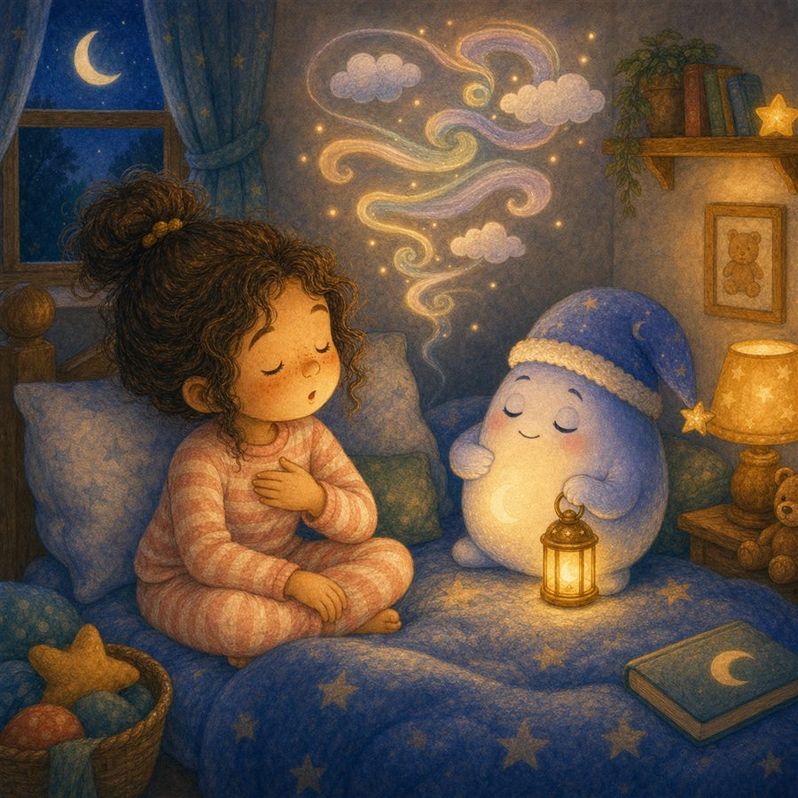
„Und wenn niemand wach ist?", fragte Noah.
„Dann hilft der Ruhe-Atem", sagte Nino und machte es vor. „Einatmen — die Schultern werden weich. Ausatmen — der Bauch darf loslassen. Noch einmal, ganz langsam."
Er machte seine Laterne mit jedem Ausatmen ein bisschen dunkler. Mira atmete mit. Ihre Gedanken wurden langsamer, wie ein Karussell, das austrudelt.
„So", flüsterte Nino. „Jetzt kann der Schlaf hereinkommen."
Callis Schlau-Seite
Manchmal kommt der Schlaf nicht sofort — das ist normal.
Ein voller Kopf, Sorgen oder Angst können wach halten.
Du darfst reden: „Ich kann nicht schlafen" oder „Ich hab Angst" sind Hilfe-Sätze, keine falschen Sätze.
Ruhiges, langsames Atmen hilft, die Gedanken leiser zu machen.
Callis Satz für dieses Kapitel
Wenn der Schlaf nicht kommt, bist du nicht allein damit.
Mitmach-Kompass
Leg dich bequem hin.
Atme langsam ein und zähl bis vier.
Atme langsam aus und stell dir vor, ein lauter Gedanke schwebt mit hinaus.
Mach das ein paarmal.
Wenn etwas dich sehr beschäftigt: Sag es morgen jemandem, den du magst.
„Ein Gedanke ist rausgeflogen", sagte Mira. „Und noch einer", sagte Nino. „Gute Reise."
Einschlafprobleme, Grübeln und Ängste sind bei Kindern häufig. Wichtiger als schnelle Lösungen ist das Gefühl von Sicherheit: zuhören, dableiben, ruhig bleiben. Feste Rituale, gedämpftes Licht und die Erlaubnis, über Sorgen zu sprechen, helfen.
Bei anhaltenden oder stark belastenden Schlafproblemen, großen Ängsten oder auffälliger Tagesmüdigkeit sollte fachlicher Rat eingeholt werden.
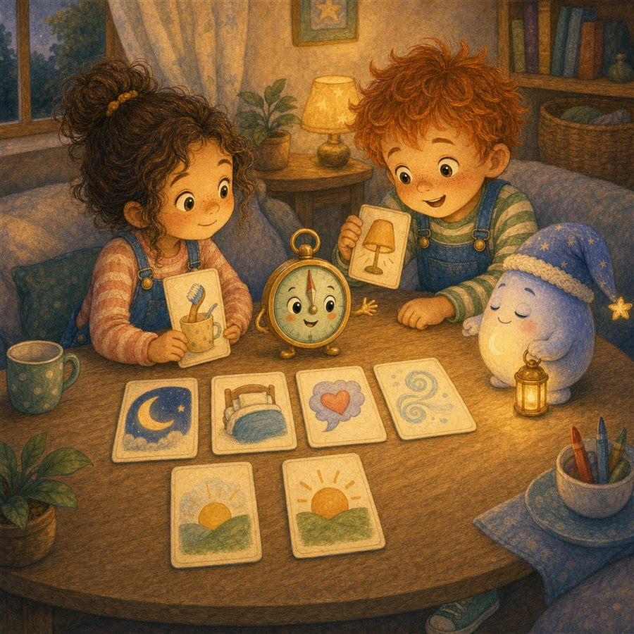
Am Sonntag legte Calli sieben ruhige Karten auf den Tisch. „Der Schlaf-Wochen-Kompass", sagte er. „Keine Regeln. Nur kleine Ideen für gute Nächte."
Auf den Karten stand nichts Kompliziertes: zur ähnlichen Zeit ins Bett, Bildschirme früher aus, Zimmer dunkel und kühl, Abendritual, drei gute Dinge, über Sorgen reden, morgens ähnlich aufstehen.
Mira nahm die Ritual-Karte. Noah nahm die Bildschirm-Sonnenuntergang-Karte. Nino nickte zu jeder einzeln.
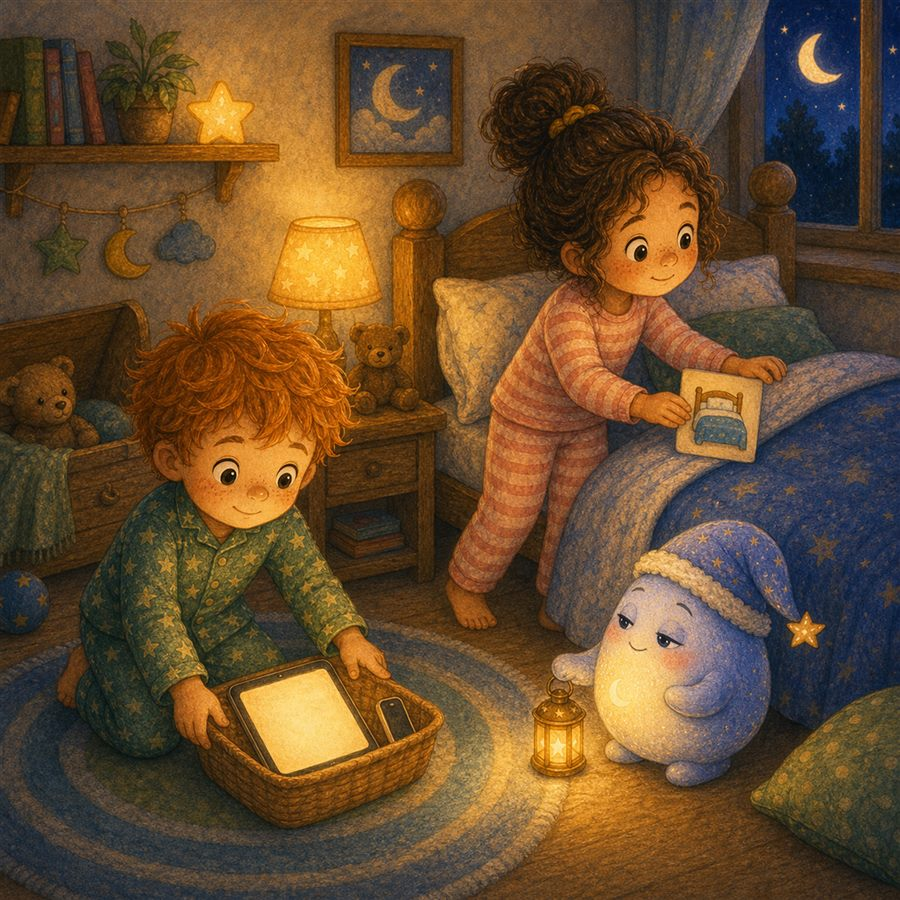
In der Woche probierten alle ihre Karte aus. Mira hielt jeden Abend die gleiche Startrampe ein. Noah schickte die Bildschirme pünktlich schlafen. Und einmal, als ein Angst-Traum kam, weckte Noah einfach seine Eltern — und schlief danach ruhig weiter.
„Habt ihr gemerkt?", fragte Calli. „Keiner musste alles perfekt machen."
„Nur ein bisschen ruhiger als vorher", sagte Mira. „Genau", sagte Nino.
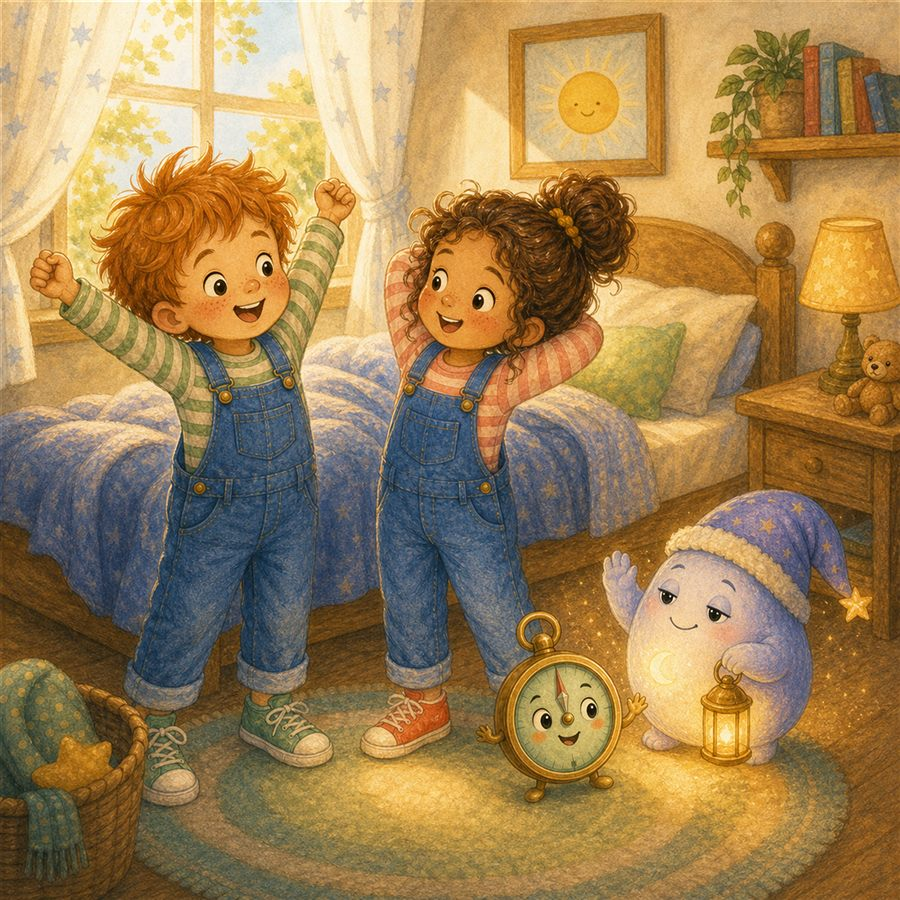
Am Ende der Woche wachten alle auf — und die Sonne schien ins Zimmer. Noah streckte sich. „Ich bin richtig ausgeschlafen. Und mein Turm hat heute Nacht bestimmt Kraft getankt." Mira lachte. „Türme schlafen nicht." „Meiner schon", sagte Noah.
„Merkt ihr?", fragte Calli. „Gut geschlafen fühlt sich der Morgen leichter an."
Nino gähnte glücklich. „Schicht beendet. Bis heute Abend."
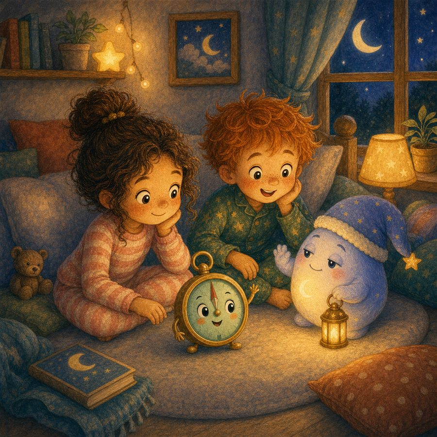
Am Abend saßen alle noch einen Moment zusammen im warmen Lampenlicht. „Ihr habt viel gelernt", sagte Calli. „Was denn?", fragte Noah.
Mira zählte auf: „Schlaf ist keine Pause, sondern Nachtarbeit. Träume sind normal. Licht macht wach. Ein Ritual hilft. Und wenn der Schlaf nicht kommt, darf ich reden."
„Damit seid ihr offiziell", sagte Calli feierlich. „Schlaf-Helden."
Nino lächelte müde und hob die Laterne. „Meine ruhigsten Helden."
1. Was ist Schlaf? (a) verlorene Zeit (b) Nachtarbeit für deinen Körper (c) ein Pauseknopf
2. Was macht dein Gehirn nachts? (a) nichts (b) es sortiert den Tag in Regale (c) es schaut fern
3. Kann ein Traum dir wehtun? (a) ja (b) nein, er bleibt im Traum-Kino (c) nur mittwochs
4. Was sagt helles Licht deiner inneren Uhr? (a) „Es ist noch Tag!" (b) „Gute Nacht" (c) gar nichts
5. Was hilft beim Einschlafen? (a) ein aufregendes Video (b) ein ruhiges Abendritual (c) helles Licht
6. Was tust du, wenn du nicht schlafen kannst? (a) allein wach liegen (b) reden und ruhig atmen (c) aufstehen und toben
Auflösung: 1b · 2b · 3b · 4a · 5b · 6b — Schlaf-Held / Schlaf-Heldin!
callidus KIDS · Callis Gesundheits-Kompass
für einen echten Schlaf-Helden / eine echte Schlaf-Heldin
(Dein Name)
hat mit Calli und Nino gelernt:
Schlaf ist Nachtarbeit, Träume sind normal, Licht macht wach, ein Ritual hilft —
und wer nicht schlafen kann, darf reden und Hilfe holen.
✂ Zum Ausschneiden
Schlaf lässt sich nicht erzwingen — aber vorbereiten. Kinder schlafen leichter, wenn der Abend ruhig ausklingt und Sicherheit vermittelt.
Hilfreich sind feste Zeiten, ein wiederkehrendes Ritual, gedämpftes Licht, ein kühles, dunkles Zimmer und die Erlaubnis, über Sorgen und Ängste zu sprechen. Druck, lange Diskussionen oder Bildschirme kurz vor dem Schlaf wirken eher gegenteilig.
Statt „Jetzt wird endlich geschlafen" helfen oft ruhige Sätze: „Was war heute schön?" · „Wo im Körper merkst du die Müdigkeit?" · „Möchtest du über etwas reden?" · „Ich bin in der Nähe."
Diese Sätze machen kein Kind sofort müde, aber sie schaffen Ruhe und Verbindung — und die sind die beste Einschlafhilfe.
Woher wissen Erwachsene das? Forscherinnen und Forscher beobachten und vergleichen, wie Schlaf Kindern guttut: warum der Körper nachts repariert und wächst, warum das Gehirn im Schlaf sortiert, wie Licht die innere Uhr steuert und warum Rituale und ausreichend Schlaf für Stimmung und Konzentration wichtig sind.
Vor der Veröffentlichung fachlich gegenlesen lassen. Startpunkte: CDC/AAP-Schlafempfehlungen für Kinder, Empfehlungen zu altersgerechten Schlafdauern, kinderärztliche Empfehlungen zu Schlafhygiene und Bildschirmzeit am Abend.
Die Quellen werden in der finalen Ausgabe kompakt angegeben.
callidus macht Gesundheitswissen verständlich — klar, freundlich, alltagstauglich.
Für Erwachsene gibt es Gesundheitswissen, Checks und digitale Angebote. Callis Gesundheits-Kompass übersetzt diese Haltung für Familien: mit weniger Druck, mehr Neugier und einem Kompass, der ehrlich stolz auf eine ruhige Nacht ist.
Band 1: Hör auf deinen Körper — Körpersignale.
Band 2: Das Zucker-Monster — Essen, Trinken und Energie.
Band 3: Der Zappelmotor — Bewegung, Pausen und Gute-Laune-Funken.
Band 4: Die Schlaf-Werkstatt — Schlaf, Träume und die innere Uhr. (dieses Buch)
Band 5: Das Gefühls-Wetter — Gefühle, Mut und Hilfe holen.
Callis Gesundheits-Kompass · Band 4: Die Schlaf-Werkstatt · Reihe: callidus KIDS · 1. Auflage 2026
Text, Konzept & Herausgabe: callidus A&M
Illustrationen: Digitale Aquarell-Illustrationen, KI-gestützt erstellt und redaktionell überarbeitet, auf Basis fester Character-Sheets.
Verantwortlich i. S. d. Presserechts: callidus A&M · Arnold Jedich (Geschäftsführer) · Gerstenstraße 12 · 86356 Neusäß · Deutschland · Kontakt: Telefon 0179 7007772 · info@callidus-am.de · www.callidus-am.de
© 2026 callidus A&M. Alle Rechte vorbehalten. Kein Teil dieses Werkes darf ohne schriftliche Zustimmung reproduziert, vervielfältigt oder verbreitet werden.
Dieses Buch vermittelt allgemeines Gesundheitswissen für Familien und ersetzt keine ärztliche Beratung, Diagnose oder Behandlung.
Ein Teil der Bildproduktion entsteht mit KI-gestützten Bildwerkzeugen und wird vor Veröffentlichung geprüft, überarbeitet und bei Amazon KDP entsprechend deklariert.
Die Texte vermitteln allgemeines Gesundheitswissen und ersetzen keine ärztliche Beratung, Diagnose oder Behandlung.
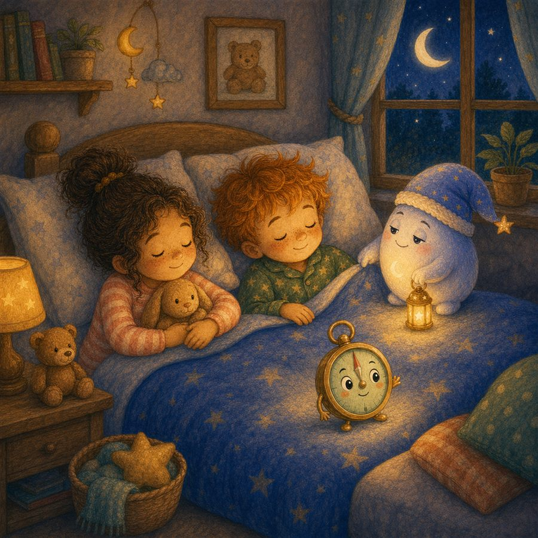
Als alle schliefen, ging Nino noch einmal leise durchs Zimmer. Er zog eine Decke gerade, rückte ein Kuscheltier zurecht und lächelte.
Die Nacht-Werkstatt summte leise vor sich hin: reparieren, wachsen, sortieren, träumen.
„Gut gemacht, ihr zwei", flüsterte Nino. „Schlaft schön. Ich pass auf die Werkstatt auf."
Und die Laterne leuchtete warm wie ein kleines, freundliches Nachtlicht.
Auch Calli klappte seine Nadel ein. Nicht ganz. Nur ein bisschen. Denn ein guter Kompass schläft nie völlig ein. Er ruht nur. Für morgen.
Und falls du heute Nacht nicht gleich einschläfst, dann weißt du jetzt: Das ist keine verlorene Zeit. Deine Werkstatt öffnet gleich. Und wenn etwas dich wachhält, darfst du reden.
Ganz leise sagen Calli und Nino zusammen: „Gute Nacht. Erst zur Ruhe kommen — dann öffnet der Schlaf."